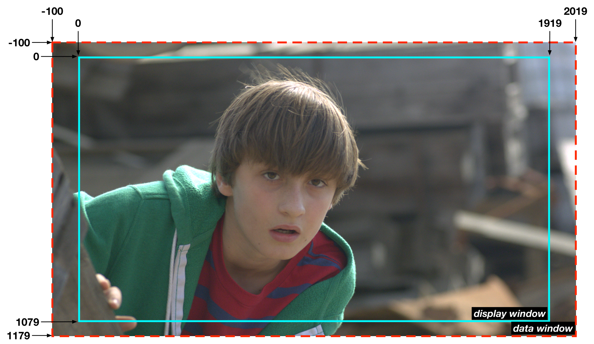

Common Working Formats
Movie-Based Formats
In studio feature and television production, frame-based image sequences are the standard format for visual effects plates and renders, film scans, and even some Camera RAW formats.1 However, in independent production, it is very common that visual effects plates, and even final visual effects renders, are delivered as Apple ProRes 4444 in QuickTime movie wrappers. While it is inadvisable for intermediate visual effects renders, especially CGI, to be rendered to movie formats, it is an acceptable final delivery format in most cases.
As with any format, early roundtrip testing between production, visual effects vendors, and the digital intermediate is important for verifying workflow integrity. Common issues arise when unintentional gamma transforms are applied during transcoding.
Aside from visual effects, various flavors of ProRes, DNxHD, and DNxHR are suitable for offline editorial and mastering.
Apple ProRes
Apple ProRes codecs are resolution-independent, professional video codecs almost exclusively in
QuickTime (.mov) wrappers. Avid Media Composer can rewrap ProRes as MXF OP-Atom per its media
management system.
| Variant | Encoding | Typical use |
|---|---|---|
| ProRes 4444 XQ | 12-bit 4:4:4 (RGBA / Y′CbCrA), with alpha | Highest quality — camera acquisition, intermediate grading, VFX plates and delivery |
| ProRes 4444 | 12-bit 4:4:4, with alpha | Camera acquisition, intermediate grading, VFX plates and delivery |
| ProRes 422 HQ | 10-bit 4:2:2 | High-quality mastering and delivery |
| ProRes 422 | 10-bit 4:2:2 | Mastering and delivery |
| ProRes 422 LT | 10-bit 4:2:2 | Lighter editorial |
| ProRes 422 Proxy | 10-bit 4:2:2 | Offline dailies and editorial proxies |
The 4444 variants sustain multiple generations of encoding without meaningful image degradation and are visually indistinguishable from equivalent uncompressed alternatives, which is why they serve as camera acquisition,2 intermediate grading, and VFX plate and delivery formats. See the Apple ProRes white paper for details.
ProRes also has a RAW variant (ProRes RAW, 2018), but it is a camera-acquisition format only — like ARRIRAW or R3D — and is not applicable to transcoded VFX plate pulls.
Avid DNx
At IBC 2025 Avid rebranded the DNxHD and DNxHR families to a single name, Avid DNx, dropping the
HD / HR / GX acronyms — misleading now that the codec is resolution-independent — in favor of
five quality levels. A notable change with the rebrand: all Avid DNx levels now support 8- to
16-bit encoding and an optional alpha channel — the level indicates the chroma sampling and the
bandwidth (compression), not a fixed bit depth:3
| Level | Chroma | Typical use |
|---|---|---|
| 444 | 4:4:4 / RGB | Finishing, VFX delivery, cinema masters |
| HQX | 4:2:2 | Color and mastering; multi-generation work |
| HQ | 4:2:2 | High-quality editorial and production |
| SQ | 4:2:2 | Editorial and broadcast delivery |
| LB | 4:2:2 / 4:2:0, low bandwidth | Offline editorial and proxies |
Data rates scale with resolution and frame rate. From Avid's published figures, at UHD (3840×2160) / 23.976 fps they run roughly 167 MB/s (444), 83 MB/s (HQX and HQ), 55 MB/s (SQ), and 17 MB/s (LB) — about 1.3 Gb/s down to 137 Mb/s; at HD they are roughly a quarter of that (444 ≈ 42 MB/s, LB ≈ 4 MB/s). Avid Media Composer manages DNx media natively in MXF OP-Atom, and Avid also ships DNx QuickTime codecs. The codec is standardized as SMPTE ST 2019-1 (VC-3).3
H.264 / H.265 (HEVC)
H.264 and its Ultra High-Definition successor, H.265, are categorically distribution/exhibition formats. While many prosumer and specialty cameras (DSLRs included) record to H.264, this is not a desirable recording format for visual effects or digital intermediates. File sizes are kept small through aggressive compression, often involving frame-interpolation techniques to reduce the number of discrete raster frames stored in the movie container. H.264 and H.265 are non-ideal for editing and post-production.
They are, however, perfectly good creative-review proxies. Much VFX review happens in a browser on platforms like Frame.io or cineSync, where — whatever the quality of the file that was uploaded — the player streams an H.264 or H.265 transcode anyway. For a director or supervisor giving creative direction, that is plenty: they can judge staging, timing, and the look. It is not a substitute for final QC sign-off, which belongs on the graded shot in the DI — but for broad creative approval an H.264 / H.265 proxy is entirely sufficient.
In practice, consumer H.264 and H.265 deliverables are 8-bit and 10-bit 4:2:0 respectively, because that is what hardware decoders and streaming platforms support — but both standards define higher-bit-depth, higher-chroma professional profiles (H.264 High 10 / Hi444PP up to 14-bit; HEVC Main 12 / Main 4:4:4 12) used in mezzanine and archival contexts. Neither commonly supports an embedded alpha channel.
These codecs are commonly found in .mov, .mp4, .m4v, and .mkv file wrappers.
AV1 and H.266/VVC
Two newer distribution codecs are worth knowing — and, like H.264/H.265, both are delivery and exhibition formats, not post-production working codecs.
AV1 (AOMedia, royalty-free) is the significant one for streaming: native decode in every major browser, broad hardware support, and by late 2025 a large share of Netflix's streaming hours were served in AV1. For an independent production it matters as a destination your master gets encoded into by the platform — not something you deliver, edit, or master in.
H.266/VVC is far more niche — little consumer hardware decode and no browser support — with its real traction in broadcast (Brazil's TV 3.0 / DTV+ mandates VVC and began 4K HDR over-the-air in 2025). An independent film will not deliver in it.
Neither is an acquisition, working, or mastering format. Treat both as the platform-side encodes that sit downstream of your ProRes / IMF / DCP master.
Frame-Based Formats
OpenEXR (.exr)
OpenEXR (more commonly referred to as EXR) is an open-source format developed by Industrial Light & Magic (ILM) as a replacement for legacy image formats commonly used in visual effects. EXR is designed for multichannel 16-bit and 32-bit floating point — almost always in scene-linear encoding.
EXRs support multiple layers in addition to an alpha channel, allowing VFX artists and studios to integrate it into their pipeline in a customized way, unifying their workflow around a single file rather than dozens of files representing individual channels and render passes per frame.
EXRs can store uncompressed, losslessly compressed, and variable lossy compressed image data through a variety of compression schemes. This can be attractive, as 16-bit uncompressed data takes up more space, and consequently more data bandwidth, than 10-bit alternatives.
The choice of compression scheme matters in a digital intermediate: some are cheap to decode and play back in real time, others are not — and the ACES2065-1 archival container (SMPTE ST 2065-4) permits only uncompressed data regardless. For final EXR renders delivered to the DI, uncompressed or a fast lossless scheme (ZIP / ZIP1) is the safe choice; confirm with your DI facility or colorist before using anything heavier.
| Compression | Lossless | Real-time DI playback | Notes / when to use |
|---|---|---|---|
| None (uncompressed) | ✓ | ✓ | Largest files, no decode cost. The only option permitted in the ACES2065-1 archival container (ST 2065-4). |
| ZIP / ZIP1 (ZIPS) | ✓ | ✓ | zlib; very efficient to decode and no real problem in modern DI systems — a safe default for VFX renders to the DI. |
| RLE | ✓ | ✓ | Run-length; light, fast, modest savings. |
| PIZ | ✓ | ✗ | Wavelet + Huffman; excellent on grainy / noisy plates, but slower to decode and can impact realtime playback on some systems. |
| PXR24 | ✓ half / ✗ 32-bit | ✓ | Good ratio; lossless for half-float and integer, lossy for 32-bit float. |
| B44 / B44A | ✗ (lossy) | ✓ | Fixed-rate, designed for fast real-time playback. |
| DWAA / DWAB | ✗ (lossy) | ⚠ | DCT, JPEG-like; the smallest files, but lossy and heavier to decode. |
| HTJ2K | ✓ | ⚠ | High-Throughput JPEG 2000 (OpenEXR 3.4); lossless, but support is uneven — DaVinci Resolve can read it but not write it. |
When in doubt for a DI delivery: uncompressed, or ZIP / ZIP1.
EXRs with multi-channel render passes (AOVs — arbitrary output variables) such as normal maps and z-depth are especially advantageous in visual effects workflows. However, they are rarely included in final renders delivered to the DI, as those additional render passes are intended for lighting and compositing and may serve little benefit to the colorist and will only increase the size of the files.
EXRs, unlike most image formats, may contain image data (the "data window") outside the visible frame area ("display window"). Conversely, a data window smaller than the display window is also supported. This feature is designed for CGI compositing, particularly when producing large-kernel blurs or 2D camera shake effects during compositing. Most DI systems are incompatible with EXRs containing mismatched data and display window sizes. VFX vendors must be informed that their final renders delivered to the DI must have matching data and display window sizes. In some DI systems, mismatched window sizes can lead to image artifacts and in some cases prevent the software from reading the files at all.

DPX (.dpx)
DPX has been the standard file format for digital intermediate scanning, color grading, and
finishing for over twenty years and is a common working format for digital intermediates as
well as serving as an intermediate format for transcoded Camera RAW media. It is the successor
to the legacy Cineon format (.cin) which preceded it as the standard film scanning format.
DPX file headers can store embedded timecode and tape name for assisting in conform.
Image data is routinely stored as fully uncompressed RGB 10-bit or 16-bit integer. Although the DPX specification defines support for floating point data types, many software and digital intermediate systems do not support floating point DPX. Alpha channel support is defined in the specification, but many systems do not support DPX with embedded alpha.
DPX files are advantageous as they are completely uncompressed and, unlike lossy compressed media, retain image fidelity across successive passes. File sizes are easily predicted, as all files of a given raster dimension, bit depth, and header length will be the same size, regardless of the image content.
TIFF (.tif, .tiff)
TIFF is an older image format that, within the context of visual effects and digital intermediate, is almost a legacy format. In visual effects it has been completely replaced by DPX and EXR, and in digital intermediates 16-bit TIFFs are the standard format for X'Y'Z' DCDMs (Digital Cinema Distribution Masters). Aside from DCDMs, some studios prefer 16-bit DCI-P3 RGB TIFFs over DPX as an archival master, but this is quickly being replaced by EXR.
TIFFs and other legacy graphics formats4 are often used for simple title graphics that are comped over picture during the DI. In these cases, TIFF is chosen for its simplicity, as it supports an alpha channel and is readily compatible with Photoshop, where most of those graphics are generated.
TIFFs should not be used as an intermediate working format for either visual effects or digital intermediates, as DPX and EXR both provide advantages over TIFF.
TIFFs are commonly either RGB 8-bit or 16-bit integer, while 24-bit and 32-bit floating point variants exist, with support for embedded alpha channel, but without support for tape name or timecode metadata.
TIFFs can be uncompressed, losslessly compressed, or lossy compressed in a variety of ways, and support multiple layers of image data.
-
ARRIRAW (
.ari), Panasonic V-RAW (.vraw), CinemaDNG (.dng) ↩ -
ARRI ALEXA ProRes, RED V-RAPTOR, Blackmagic URSA Cine, a variety of external third-party recorders, and more… ↩
-
Avid, Avid DNx naming scheme and data rates and DNxHR Codec Bandwidth Specifications; rebrand announced at IBC 2025. ↩↩
-
JPEG, PNG, Targa for example. ↩